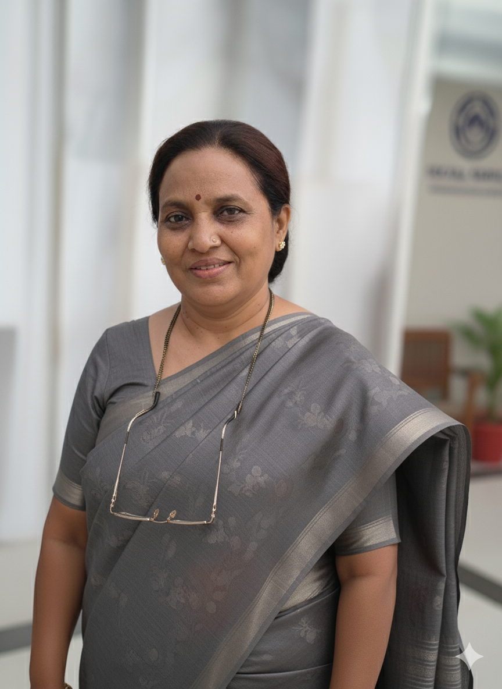
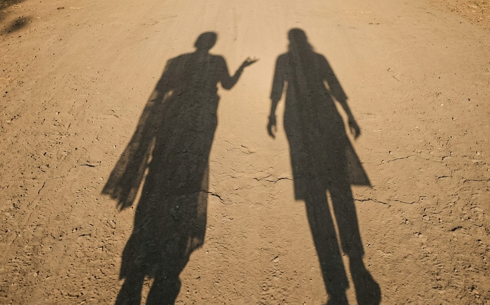

“Driven by empathy. Inspired by lived experience. Committed to action.”
The heart of The Good Box Project begins with its founders. This page exists to honor the lived motivations, values, and personal journeys that shaped our mission. It is their belief that compassion must be coupled with action to create real change.
Priyanka is a purpose-driven leader whose professional journey has always been guided by a deep sense of compassion. She believes that business and social initiatives should not just generate profit, but empower communities and uplift lives. Her approach to leadership is human-centered; she builds systems that respect the dignity of every individual involved.
As the co-founder of The Good Box Project, Priyanka brings strategic clarity, operational discipline, and an unwavering commitment to "dignity-first" giving. She has been recognized for her efforts in empowering women and creating sustainable impact through compassion.
Priyanka’s vision was born from witnessing the stark contrast between the city's prosperity and the struggle of its daily wage earners. She realized that while aid existed, it often lacked the element of dignity. She wanted to change the narrative of charity from one of "handouts" to one of "empowerment." Her core values drive the organization's culture of accountability and care.

Born in 1963, Ganga’s life has been a beautiful tapestry of family, resilience, and care. As a daughter, a mother, and now a grandmother, she has dedicated decades to nurturing her family and managing a home. Like many women of her generation, she navigated life’s ups and downs with quiet strength, often placing others' needs before her own.
Her journey wasn't defined by boardrooms, but by the lived realities of managing a household through economic uncertainties and social shifts. This lived experience gifted her a profound empathy for the struggles of other women and families trying to make ends meet.
For many years, Ganga felt a deep desire to help but was unsure how to channel it beyond her immediate circle. It was her daughter, Priyanka, who recognized this immense potential and encouraged her to channel her empathy into structured action.
Through The Good Box Project, Ganga found a renewed sense of purpose. She brings to the table emotional intelligence, wisdom, and a "mother’s touch" that ensures our relief operations are handled with genuine warmth. She is the emotional anchor that keeps the organization grounded in human connection.
The foundation upon which The Good Box Project stands.
“We believe every human deserves safety, nourishment, care, and opportunity. And true impact begins with simple, consistent, human-centered action.”

The strength of The Good Box Project lies in the synergy between Priyanka and Ganga. Their distinct life experiences have merged to create a balanced approach to humanitarian aid.